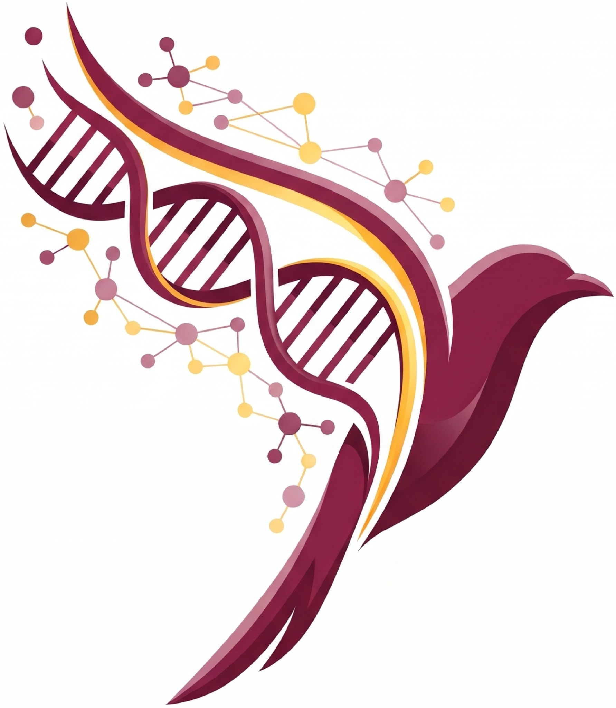

WINGS / SETUP
Starting WINGS setup…
This page will update automatically while WINGS gets ready.
0 of 6 steps completedElapsed: 0m 0s
- 1Check Docker DesktopPending
- 2Install WINGS workflowPending
- 3Prepare analysis runtimePending
- 4Prepare influenza referencesPending
- 5Prepare analysis toolsPending
- 6Start WINGSPending
Waiting for setup status…
The first setup can take a while. Keep Docker Desktop running.